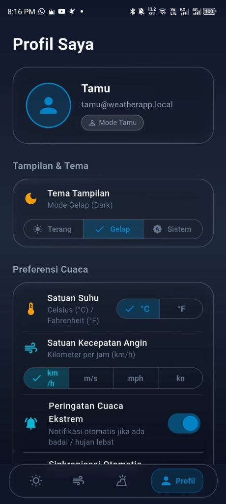
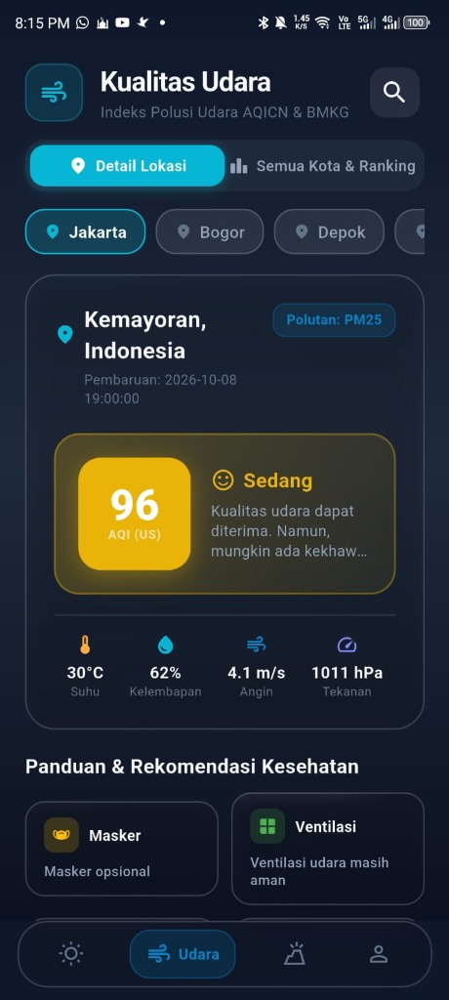
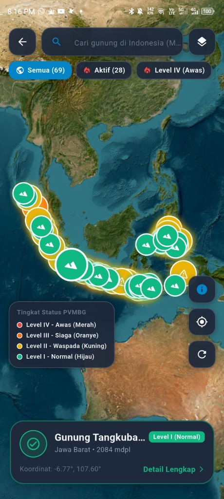
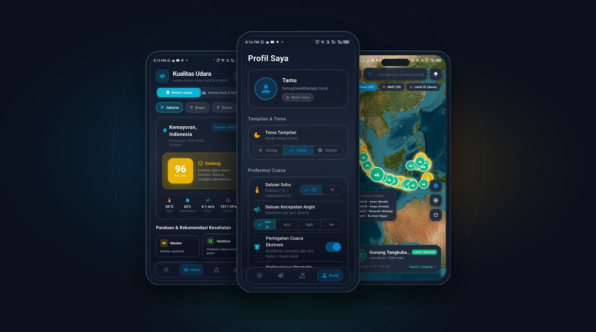

PANTAUAN CUACA, KUALITAS UDARA, GUNUNG BERAPI & GEMPABUMI
Platform monitoring cuaca presisi & peringatan dini bencana nasional yang mengintegrasikan data terbuka resmi BMKG (Badan Meteorologi, Klimatologi, dan Geofisika), stasiun kualitas udara AQICN (Polusi PM2.5/PM10), peta aktivitas 69+ pos pengamatan gunung api PVMBG Magma Indonesia, serta deteksi gempa bumi berpotensi tsunami secara real-time.
EKSPLORASI TAMPILAN & FITUR UTAMA APLIKASI

Perkiraan Cuaca Presisi & Peringatan Dini BMKG
Menyajikan data cuaca akurat berbasis geolokasi pengguna dengan integrasi API resmi BMKG untuk memantau kondisi atmosfer secara langsung dan mendeteksi potensi cuaca ekstrem.
- Metrik Cuaca Lengkap: Suhu aktual (30°C), "Terasa seperti" (35°C), Kelembapan udara (66%), Kecepatan angin (3 km/h), dan Indeks Radiasi UV harian.
- Banner Peringatan Dini BMKG Aktif: Deteksi real-time wilayah berpotensi cuaca ekstrem (contoh: Peringatan 5 Wilayah — Hujan Lebat disertai Petir di Aceh).
- Radar Pintasan Kebencanaan Nasional:
- Berita & Buletin Meteorologi: Feed informasi dan edukasi kebencanaan resmi BMKG langsung ke genggaman pengguna.
Indeks Kualitas Udara (AQI - Air Quality Index)
Pemantauan tingkat polusi udara berbasis stasiun pengukur AQICN dan BMKG dengan analisis konsentrasi partikel mikro berbahaya (PM2.5) serta panduan proteksi kesehatan.
- Indeks Polusi AQI US & Kategori Warna: Skor AQI real-time (contoh: 96 AQI — Kategori Sedang) dengan indikator visual berkode warna standar internasional.
- Multi-Kota & Ranking Kualitas Udara: Fitur perbandingan polusi udara antar wilayah (Jakarta, Bogor, Depok, dan kota-kota besar lainnya).
- Parameter Fisika Udara: Menampilkan suhu lingkungan, kelembapan relatif, kecepatan angin, serta tekanan atmosfer (1011 hPa).
- Panduan & Rekomendasi Kesehatan Cerdas:
Peta Satelit Aktivitas Gunung Berapi (PVMBG)
Pemetaan visual interaktif berbasis citra satelit resolusi tinggi untuk memantau 69+ gunung api di seluruh gugusan kepulauan Indonesia sesuai data pos pengamatan PVMBG Badan Geologi.
- Klasifikasi 4 Tingkat Status PVMBG: Level I Normal, Level II Waspada, Level III Siaga, dan Level IV Awas dengan penanda visual glowing marker.
- Peta Interaktif GIS & Titik Koordinat: Filter status gunung aktif (28 gunung api aktif), pencarian nama gunung, dan elevasi ketinggian (mdpl).
- Notifikasi VONA (Aviation): Menampilkan status abu vulkanik untuk keselamatan penerbangan internasional.
- Zona Radius Bahaya Kawah: Radius aman kawah puncak (1.5 - 3 km) serta pantauan aktivitas magma.
Deteksi Gempa Bumi & Peringatan Bencana Real-Time
Sistem pemantauan gempa bumi terintegrasi sensor seismik BMKG untuk mendeteksi gempa berkekuatan M ≥ 5.0 dan gempa berpotensi tsunami secara seketika.
- Notifikasi Cepat Gempa M ≥ 5.0: Data getaran seismik instan mencakup waktu kejadian, kekuatan magnitudo, kedalaman, dan status potensi tsunami.
- Episentrum & Jarak Lokasi: Kalkulasi jarak pusat gempa ke lokasi tempat tinggal pengguna beserta koordinat lintang & bujur presisi.
- Titik Panas (Hotspot Karhutla): Deteksi titik api kebakaran hutan & lahan se-Indonesia via sensor satelit LAPAN/BRIN & BMKG.
- Riwayat & Gempa Dirasakan: Informasi skala MMI (Modified Mercalli Intensity) untuk estimasi dampak getaran.
TAMPILAN INTERAKTIF RESOLUSI TINGGI (HD)
Dashboard Cuaca Hiperlokal
Suhu real-time, kelembaban, prakiraan per jam, dan animasi radar cuaca BMKG.

Indeks Kualitas Udara (AQI)
Konsentrasi polutan PM2.5 & PM10, rekomendasi masker, dan status udara sehat.

GIS Peta Gunung Api Aktif
Status vulkanik (Level I-IV), zona bahaya radius erupsi, dan seismograf PVMBG.

Early Warning Gempa M ≥ 5.0
Notifikasi gempa bumi real-time, deteksi potensi tsunami, dan jarak episentrum.
ARSITEKTUR TEKNIS & INTEGRASI MULTI-ENDPOINT
INTEGRASI BMKG & PVMBG API
Sinkronisasi data real-time dengan Open Data BMKG (prakiraan cuaca, gempa M ≥ 5.0, radar cuaca) serta feed resmi PVMBG Magma Indonesia untuk status erupsi vulkanik terkini.
AQICN SENSOR INTELLIGENCE
Pengolahan data stasiun kualitas udara dunia (AQICN) untuk menghitung indeks partikel PM2.5 & PM10, menghasilkan rekomendasi kesehatan preventif secara otomatis.
GIS SATELLITE MAPPING LAYER
Rendering peta geospasial interaktif menggunakan tiles satelit berkecepatan tinggi dengan clustering marker 69+ titik gunung api dan kalkulasi radius bahaya kawah presisi.
DARK MODE & OFFLINE-READY CACHE
Antarmuka bernuansa dark slate modern dengan konsumsi baterai rendah (AMOLED friendly), didukung caching lokal agar informasi darurat terakhir tetap dapat dibaca tanpa internet.
TEKNOLOGI & SUMBER DATA
Tertarik dengan Integrasi Data Real-Time & GIS?
Membangun sistem pemantauan data publik, integrasi API geospasial, dan arsitektur dashboard berkinerja tinggi adalah spesialisasi saya. Mari diskusikan ide aplikasi Anda.